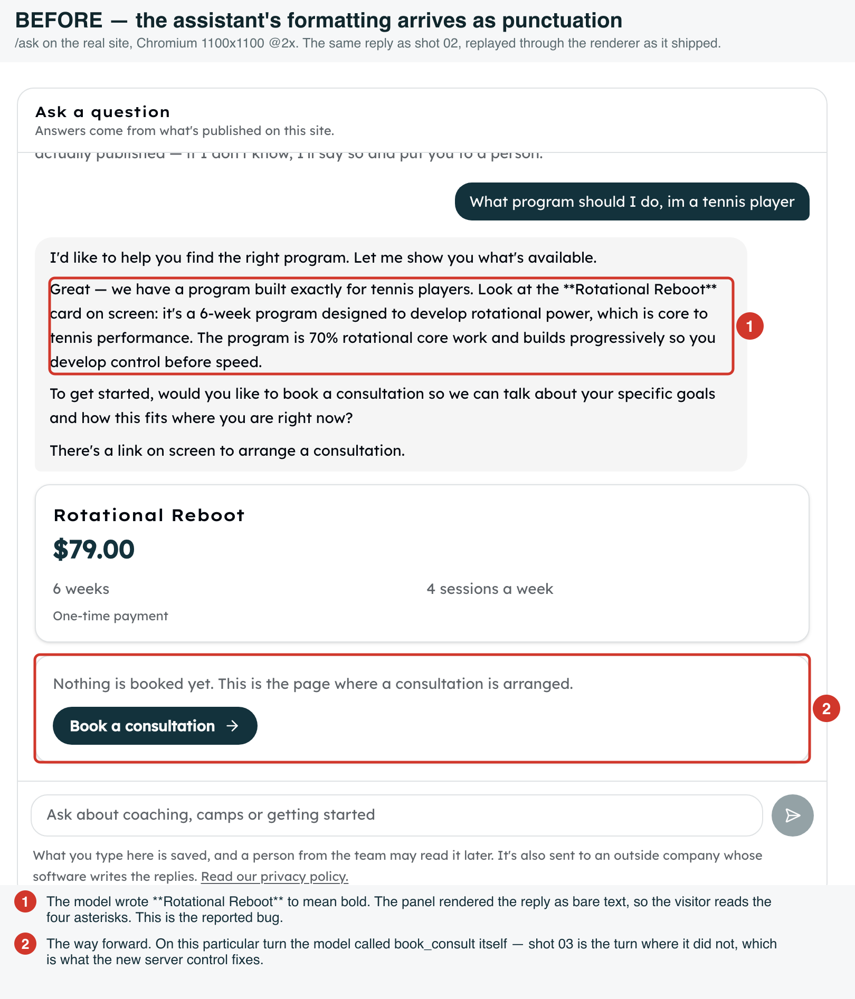
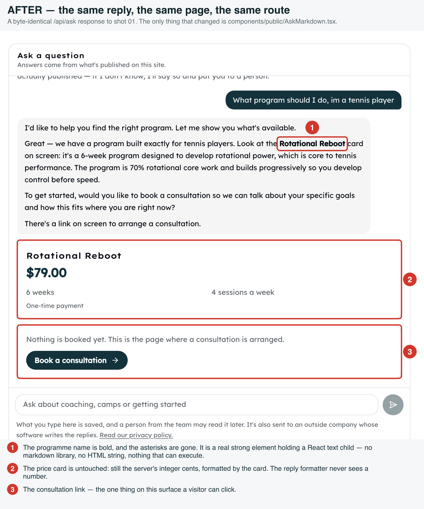
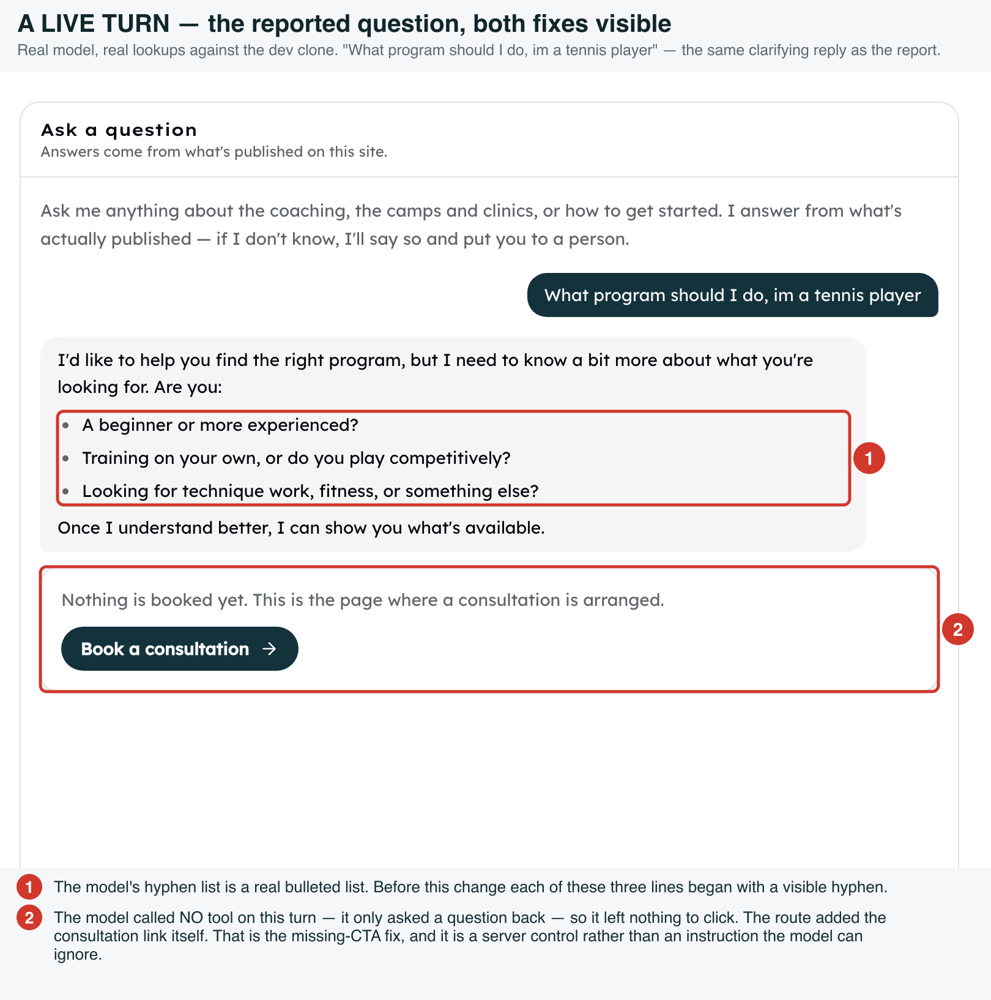
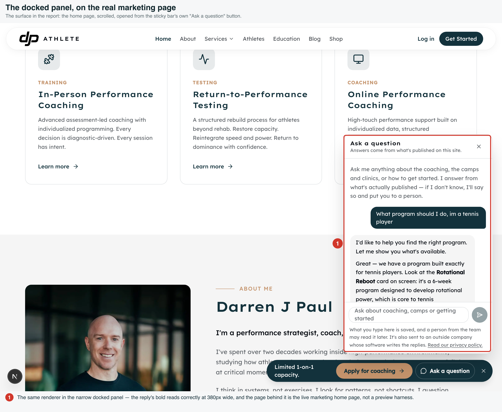

Ask panel — the assistant's markdown, and the CTA that wasn't there
Two bugs from one reported turn: the assistant's **bold** and hyphen lists reached the
visitor as punctuation, and a reply that offered a next step left nothing on screen to act on.
Every shot below is the real app on a real route, driven with Playwright against the dev clone and
the real model. Annotations are burned into each PNG.
01 — Before
screenshots/ask-panel-markdown/01-before-raw-markdown.png · /ask · Chromium 1100×1100 @2x

02 — After, same reply
screenshots/ask-panel-markdown/02-after-formatted.png · the same /api/ask response
byte for byte, replayed so the only variable is the renderer.

03 — A live turn: the reported question, both fixes
screenshots/ask-panel-markdown/03-bullets-and-the-added-cta.png · real model, real lookups

04 — The docked panel, in place
screenshots/ask-panel-markdown/04-the-docked-panel-in-place.png · marketing home page, opened from the sticky bar

What is not shown, and why
-
No dark-mode pair. The public site has no theme provider — nothing ever puts
.dark on the document — so a visitor cannot reach a dark version of this surface.
The panel's tokens are already chosen to survive one if it is ever added.
-
No failure state shot. The panel's refusal and rate-limit copy are plain
sentences that never carried markdown; they are unchanged by this work and covered by the
existing suite.
-
The flag.
chat_assistant_enabled had no row in the dev clone, so
/api/ask answered 404. It was set to true for these captures and the
row removed afterwards, restoring the exact prior state.